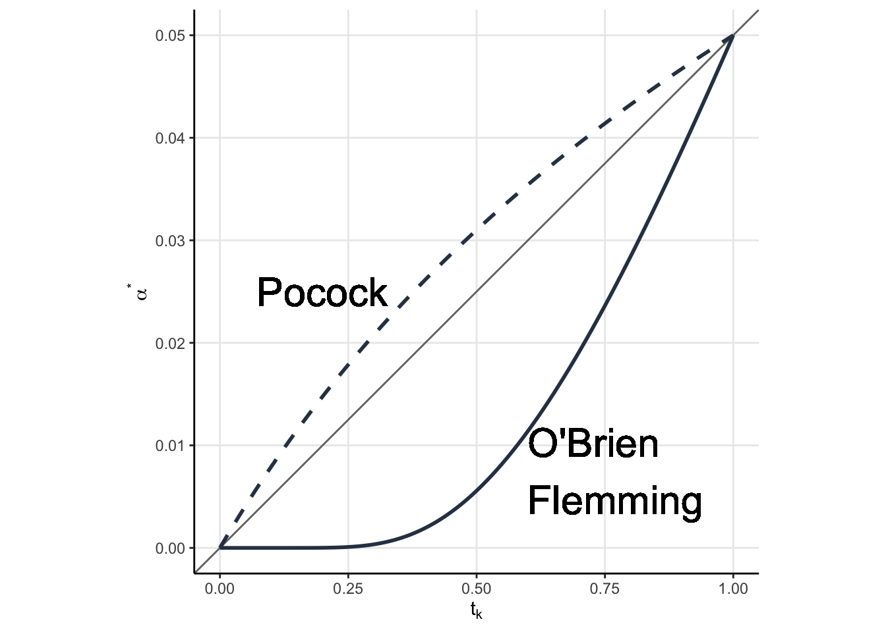
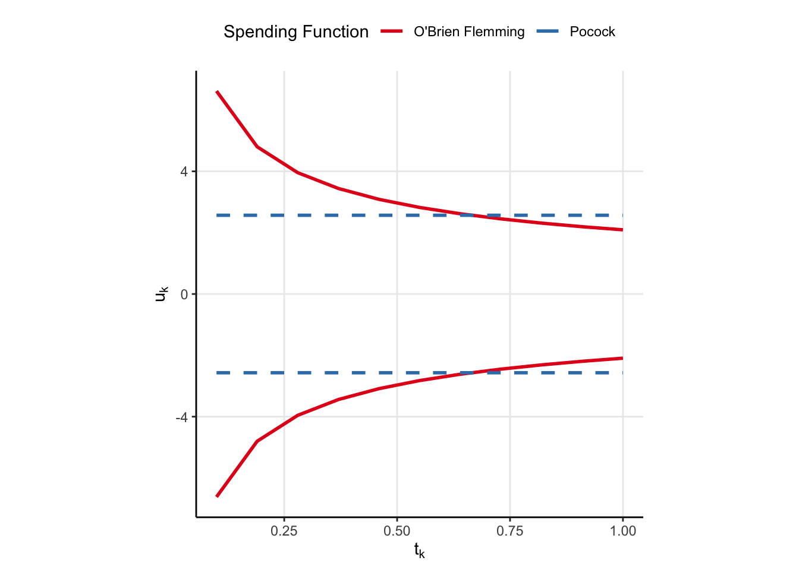
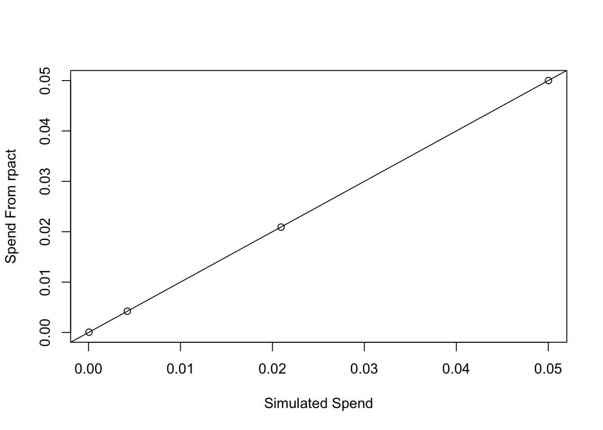

This is part 2 of an ongoing series on group sequential designs for AB testing. Previous parts are shown below
Last time, we noted that we want our AB tests to be shorter so we could learn quicker. Peeking – testing the data before the end of the experiment – inflates the probability we make a false positive unless we choose the critical values of the tests a little more carefully. The reason this happens is because requiring that any of the cumulative test statistics be larger than 1.96 in magnitude defines a region in the space of cumulative means which has a probability density larger than 5%. One way to fix that is just to redefine the space to be smaller by requiring the cumulative test statistics to be larger in magnitude than some other value. I noted this puts the unnecessary requirement on us that the thresholds all be the same. In this blog post, we will discuss other approaches to that problem and their pros and cons.
In order to have that discussion, we need to understand what “alpha” (\(\alpha\)) is and how it can be “spent”. That will allow us to talk about “alpha spending functions”.
Preliminaries
In the last post, we looked at a \(K=2\) GSD with equal sized groups. Of course, we don’t need to have equal sized groups and we can have more than two stages. Let \(n_k\) be the sample size of the \(k^{th}\) group. Then \(N = \sum_k n_k\) is the total sample size. It is sometimes more convenient to refer to the information rates \(t_k = n_k/N\). We will do the same for consistency with other sources on GSDs.
What is \(\alpha\), and How Do We Spend It?
The probability we reject the null, \(H_0\), when it is true is called \(\alpha\). In a classical test, we would reject \(H_0\) when \(\vert Z \vert > z_{1-\alpha/2}\), and so \(P(\vert Z \vert > z_{1-\alpha/2} \vert H_0) = \alpha\). Now consider a \(K=4\) GSD so we can work with a concrete example. Let \(Z^{(k)}\) be the test statistic after seeing the \(k^{th}\) group, and let \(u_k\) be the threshold so that if \(\vert Z^{(k)} \vert > u_k\) then we would reject the null. Then a type one error could happen when 1 …
\[ \begin{align} &\left( u_1 \lt \vert Z^{(1)} \vert \right) \quad \mbox{or} \\ & \left(u_1 \geq \vert Z^{(1)} \vert \mbox{ and } u_2 \lt \vert Z^{(2)} \vert \right) \quad \mbox{or} \\ & \left(u_1 \geq \vert Z^{(1)} \vert \mbox{ and } u_2 \geq \vert Z^{(2)} \vert \mbox{ and } u_3 \lt \vert Z^{(3)} \vert \right) \quad \mbox{or} \\ & \left(u_1 \geq \vert Z^{(1)} \vert \mbox{ and } u_2 \geq \vert Z^{(2)} \vert \mbox{ and } u_3 \geq \vert Z^{(3)} \vert \mbox{ and } u_4 \lt \vert Z^{(4)} \vert \right) \end{align} \tag{1}\]
So a type one error can occur in multiple ways, but we still want the probability we make a type one error to be \(\alpha\), which means we’re going to need to evaluate the probability of the expression above. Note that each line in (Equation 1) are mutually exclusive, so the probability of the expression above is just the sum of the probabilities of each expression. This gives us
\[ \begin{align} \alpha = &P\left( u_1 \lt \vert Z^{(1)} \vert \Big\vert H_0\right) + \\ & P\left(u_1 \geq \vert Z^{(1)} \vert \mbox{ and } u_2 \lt \vert Z^{(2)} \vert \Big\vert H_0\right) + \\ & P\left(u_1 \geq \vert Z^{(1)} \vert \mbox{ and } u_2 \geq \vert Z^{(2)} \vert \mbox{ and } u_3 \lt \vert Z^{(3)} \vert \Big\vert H_0\right) + \\ & P\left(u_1 \geq \vert Z^{(1)} \vert \mbox{ and } u_2 \geq \vert Z^{(2)} \vert \mbox{ and } u_3 \geq \vert Z^{(3)} \vert \mbox{ and } u_4 \lt \vert Z^{(4)} \vert \Big\vert H_0\right) \end{align} \]
The test at each stage contributes towards the probability we make a type one error \(\alpha\). You can think of \(\alpha\) as a “budget”, and at each stage we have to “spend” (see where I’m going?) some of that alpha, with the added condition that we can never buy it back (meaning our \(\alpha\) spending must be increasing). How much we decide to spend dictates what the \(u_k\) are going to be.
But how do we decide how to spend our \(\alpha\)? If \(\alpha\) is our budget for type one error, we need some sort of spending plan. Or perhaps a spending…function.
\(\alpha\)-Spending Functions
An \(\alpha\)-spending function \(\alpha^\star(t_k)\) can be any non-decreasing function of the information rate \(t_k\) such that \(\alpha^\star(0)=0\) and \(\alpha^\star(1) = \alpha\). Using this approach, we don’t need to specify the number of looks (though we may plan for \(K\) of them), nor the number of observations at those looks. Only the maximum sample size needed, \(N\).
Each time we make an analysis, we spend some of our budgeted \(\alpha\). In our first analysis (at \(t_1 = n_1/N\)), we spend
\[ P\left( u_1 \lt \vert Z^{(1)} \vert \Big\vert H_0\right) = \alpha^\star(t_1) \>. \]
At the second analysis, we spend
\[P\left(u_1 \geq \vert Z^{(1)} \vert \mbox{ and } u_2 \lt \vert Z^{(2)} \vert \Big\vert H_0\right) = \alpha^\star(t_2) - \alpha^\star(t_1) \>,\]
and so on, with the \(k^{th}\) analysis being the difference in the alpha spending functions at the successive information rates. The spend is defined in this way so that the sum of the spend totals \(\alpha\) since \(\alpha = \sum_{k=2}^K \alpha^\star(t_k) - \alpha^\star(t_{k-1})\). The quantities \(\alpha^\star(t_k) - \alpha^\star(t_{k-1})\) determine what the \(u_k\) should be through something called the recursive integration formula, which I will not be covering because wow is it every mathy and I need some time.
Two popular \(\alpha\)-spending functions are the Pockock Spending function and the O’Brien Flemming spending function, shown in Figure 1. The equations don’t matter, what matters is the qualitative behavior.
In gray is the line \(y = 0.05x\), which would correspond to an alpha spending function in which our spend is proportional to the difference in information rates. Note how the Pocock function is kind of close to the diagonal (but not exactly on it), while the O’Brien Flemmming is constant up until \(t_k \approx 0.3\) and then starts to increase. The result of this qualitative behavioiur is evident when we plot our rejection regions (the \(u_k\), which remember depend on the spending function).
Plotting the Rejection Regions
In my last post, the rejection region was plotted on the joint distribution of the \(Z^{(1)}\) and \(Z^{(2)}\). That is easy for two dimensions, doable for 3, and impossible for us to comprehend beyond that. Luckily, there is a simpler way of visualizing these rejection regions. We can simply plot the rejection regions \(u_k\) as a function of the information rate \(t_k\). Let’s plot the rejection regions for the Pocock and O’Brien Flemming spending functions now. But, I’m not going to label them just yet. I want you to think about which one might be which and why (knowing what we know about spending functions and the qualitative behaviour we saw above).
Code
extract_lims <- function(sfu){
gs = gsDesign(
k=11,
timing = seq(0.1, 1, length.out = 11),
test.type=2,
alpha=0.025,
beta = 0.2,
sfu=sfu
)
tibble(tk = gs$timing,
lower = gs$lower$bound,
upper = gs$upper$bound,
spending = if_else(sfu=='OF', "O'Brien Flemming", "Pocock")
)
}
sfus<- c('Pocock', 'OF')
lims <- map_dfr(sfus, extract_lims) %>%
pivot_longer(cols = lower:upper, names_to = 'which', values_to = 'uk' )
lims %>%
ggplot(aes(tk, uk, linetype = interaction(which, spending))) +
geom_line(color=my_blue, size=1) +
scale_linetype_manual(values = c(1, 1, 2, 2)) +
guides(linetype=F) +
theme(aspect.ratio = 1,
panel.grid.major = element_line()
)+
labs(x=expression(t[k]),
y=expression(u[k]))
Code
ggsave('spending.png', dpi = 240)Click to see which is which

One of the spending functions results in the same \(u_k\), regardless of information rate, while the other seems to put a relatively low chance of rejecting the null (low alpha spend) in the beginning but then allows for a larger chance to reject the null later (larger alpha spend). Now, knowing what we know about the spending function qualitative behaviour, which function corresponds to which spending function?
The solid line is very clearly the O’Brien Flemming spending function. When \(t_k\) is small, then the O’Brien Flemming spending function has a small amount of spend (because \(\alpha^\star(t_k) - \alpha^\star(t_{k-1})\) is very small when \(t_k\) is small). But, when \(t_k\) is large, then \(\alpha^\star(t_k) - \alpha^\star(t_{k-1})\) is large, leading to more spend and hence smaller \(u_k\). The Pocock function is the dashed line, but I have no good rationale why constant lines should come from a spending function which is not on the diagonal. I’d love an explanation if you have one.
So what is the difference? Why might you choose one spending function over another? Note that the O’Brien Flemming function results in critical values which are really big in the beginning and really small at the end. This means we have the best chance to reject the null near the end of the experiment. I mean…that’s nice and all, but for AB testing we want to save as much time as possible, and the large critical values in the beginning work against us in that regard. On the other hand Pocock spending has constant critical values, meaning we are more likely to save time and detect an effect early. However, we run the risk of not detecting an effect over the experimental period, so there is risk of commiting a type II error. If it were me, I would choose Pocock boundaries. Move faster, try more things, and you can likely make up for type II erros by doing so.
What would be kind of cool is to specify our own alpha spending function, perhaps one which makes it realy easy to reject the null early but later punishes us for spending so much early on. Maybe that would be a good idea for another post.
Conclusion
I feel like we are more or less ready to start doing GSD in AB testing. We know why peeking is bad, and more or less how to fix it now. We also have a better understanding of some of the tradeoffs between the two most prevalent spending functions. There is still a lot to talk about, including confidence intervals for these sorts of tests (which are NOT intuitive in the least) as well as stopping for futility as well as binding/non-binding boundaries. Honestly, I don’t have a good idea for what the next part will be about, but I promise it will make sense.
Visualising Alpha Spending in Action
Its one thing to talk about alpha spending (Equation 1 and the probability statements that follow it), but it is another thing completely to see it in action.
I’m going to use {rpact} to obtain the \(u_k\) for a \(K=4\) stage GSD using the O’Brien Flemming spending function. Then, I’m going to simulate some data from a GSD and compute the spend to show you how it works. I really hope you take the time to do the same, it can really clear up how the spending works.
First, we need data, and a lot of it. Some of the spend can be on the order of 1e-5, so I’m going to cheat a little. The book I’m working from writes down the joint distribution of the \(Z\) under some assumptions (namely that the standard deviation is known and the data are normal). Let’s use that joint distirbution to simulate 10, 000, 000 samples. This should give me about 3 decimal places of accuracy.
set.seed(0)
n = 250
K = 4
# Construct the Cholesky Factor, row-wise
A = matrix(rep(0, K*K), nrow = K)
A[1, 1] = 1
for(i in 2:K){
A[i, 1:i] = sqrt(n)/sqrt(i*n)
}
# Construct the covariance
S = A %*% t(A)
# Draw from a multivariate normal
# Lots of draws because the alpha spend will be small
X = MASS::mvrnorm(10e6, rep(0, K), S)Now, let’s use {rpart} to get those critical values as well as how much alpha should be spent at each stage.
r = rpact::getDesignGroupSequential(
kMax = K,
sided=2,
alpha=0.05,
beta=0.2,
informationRates = seq(0.25, 1, length.out=K),
typeOfDesign = 'OF'
)
z_vals = r$criticalValues
aspend = r$alphaSpentNow, its just a matter of taking means. The ith column of X represents a mean I might see in a group sequential design at the ith stage. We know what the critical value is for each stage, so we just have to estimate the proportion of observations in each column which are beyond the associated critical value.
X1 = abs(X[, 1])>z_vals[1]
X2 = abs(X[, 2])>z_vals[2]
X3 = abs(X[, 3])>z_vals[3]
X4 = abs(X[, 4])>z_vals[4]To compute the alpha spend, we just compute the probability statement above
my_spend = c(
mean(X1),
mean((!X1)&X2),
mean((!X1)&(!X2)&X3),
mean((!X1)&(!X2)&(!X3)&X4)
)Now, we just take the cumulative sum of my_spend to determine how much alpha we spend up to the ith stage
Code
plot(cumsum(my_spend), aspend, xlab = 'Simulated Spend', ylab='Spend From rpact')
abline(0, 1)
Oh MAN does that feel good! We spend very nearly the projected alpha at each stage. THAT is alpha spending in action!
Footnotes
Or if you like set theory, we could write each line as \(\left( \bigcap_{k=1}^{j-1} \vert{Z^{(k)}} \vert \lt u_k \right) \cap \left( \vert{Z^{(j)}} \vert \geq u_j \right)\).↩︎